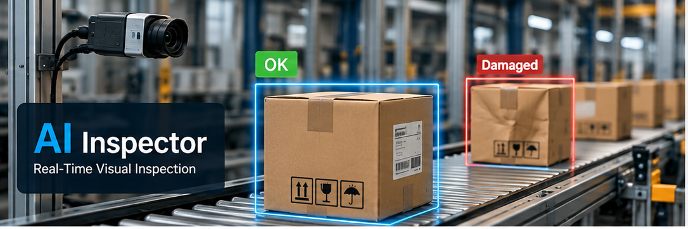
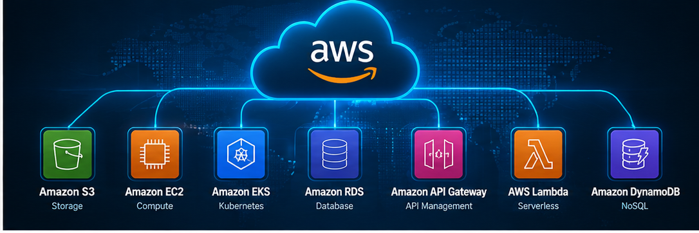
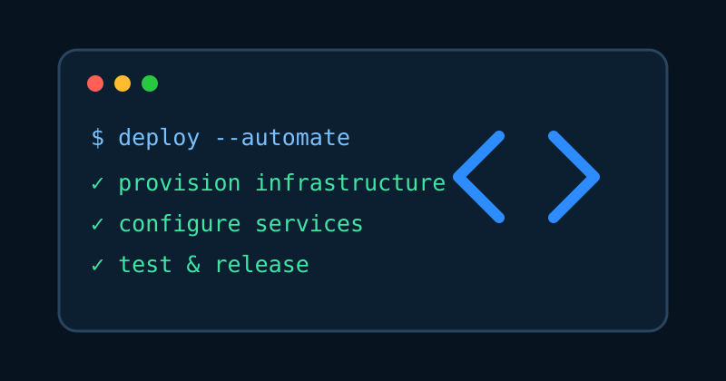
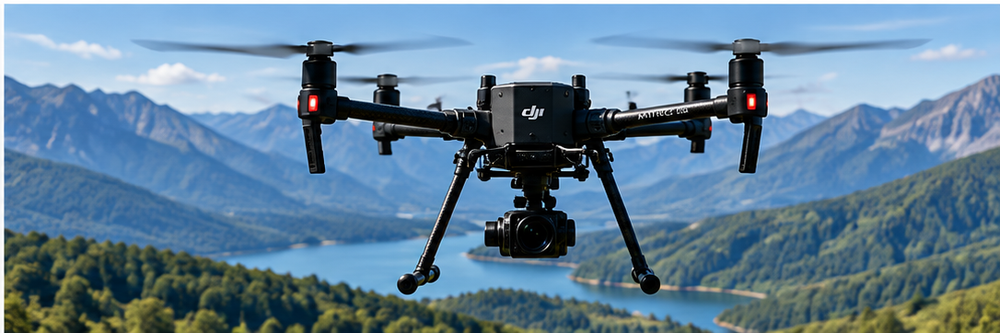
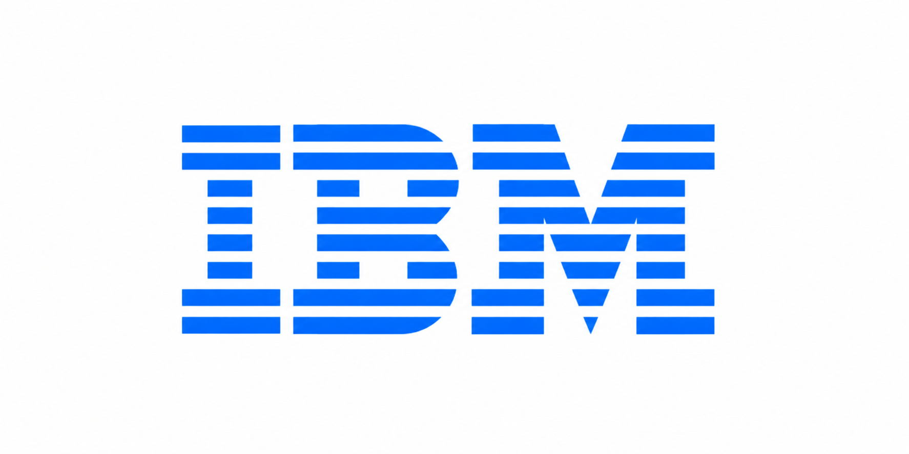

☁
Cloud & Infrastructure
AWS, Azure, IBM Cloud, EC2, S3, IAM, VPC
CLOUD / PLATFORM / SOFTWARE ENGINEER
I build scalable cloud infrastructure, automation, and software systems that solve real-world problems.
TECHNICAL SKILLS
AWS, Azure, IBM Cloud, EC2, S3, IAM, VPC
Docker, Kubernetes, OpenShift, Helm
Terraform, Ansible, Git, GitLab, CI/CD, Artifactory, Prometheus
Python, Java, C/C++, SQL, NoSQL, Data Structures
Linux, Networking, IoT, Agile, Jupyter Notebooks
PROJECTS
Projects that demonstrate cloud architecture, automation, AI/ML, software engineering, and systems thinking.

AI-powered package inspection with real-time cloud updates and dashboard monitoring.

Infrastructure-as-code patterns for repeatable cloud environments and container workloads.

Scripts and workflows designed to remove repetitive work and improve reliability.

Linux-based image capture and ML inference workflow for automated drone inspections.
PROFESSIONAL EXPERIENCE

IBM • Coppell, TX
Amazon • Arlington, VA
Self-Directed Project • Linux Platform
EDUCATION
CERTIFICATIONS